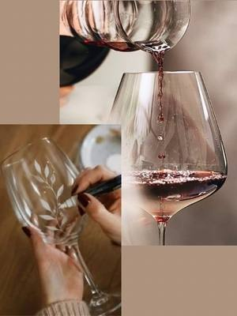

Tastings in Turin and around
Guided tastings of wine, beer, olive oil, coffee, chocolate and cocktails in Turin and around.
Search all workshops24 activities coming up · updated on 29 October 2026
 fri30octTastingsSensory gym: train your palateFriday 30 October, 17:30–20:30Lingotto (TO) · 45 €with Eataly Torino Lingotto
fri30octTastingsSensory gym: train your palateFriday 30 October, 17:30–20:30Lingotto (TO) · 45 €with Eataly Torino Lingotto wed4novTastingsWine Club: around the world in 4 bottlesWednesday 4 November, 17:30–19:00Lingotto (TO) · 45 €with Eataly Torino Lingotto
wed4novTastingsWine Club: around the world in 4 bottlesWednesday 4 November, 17:30–19:00Lingotto (TO) · 45 €with Eataly Torino Lingotto thu5novTastingsBarolo After Hours: wine bar aperitivoThursday 5 November, 17:00–19:30Lingotto (TO) · 18 €with Eataly Torino Lingotto with Fontanafredda
thu5novTastingsBarolo After Hours: wine bar aperitivoThursday 5 November, 17:00–19:30Lingotto (TO) · 18 €with Eataly Torino Lingotto with Fontanafredda- fri6novTastingsTasting: the wines of Stefano RossottoFriday 6 NovemberIvrea (TO) · 20 €with ZAC! with Vini Stefano Rossotto
 fri6novTastingsWine tasting: the basicsFriday 6 November, 17:30–20:30Lingotto (TO) · 120 €with Eataly Torino Lingotto
fri6novTastingsWine tasting: the basicsFriday 6 November, 17:30–20:30Lingotto (TO) · 120 €with Eataly Torino Lingotto sat14novTastingsOlive oil tasting: know your oilSaturday 14 November, 16:00–18:00Lingotto (TO) · 35 €with Eataly Torino Lingotto
sat14novTastingsOlive oil tasting: know your oilSaturday 14 November, 16:00–18:00Lingotto (TO) · 35 €with Eataly Torino Lingotto sat14novTastingsCioccolaTIAMO: chocolate tasting for singlesSaturday 14 November, 16:30–17:30Turinwith Vitadasingle.net
sat14novTastingsCioccolaTIAMO: chocolate tasting for singlesSaturday 14 November, 16:30–17:30Turinwith Vitadasingle.net mon16novTastingsWine tasting: the next levelMonday 16 November, 17:30–20:30Lingotto (TO) · 150 €with Eataly Torino Lingotto with Roberta Poloniato
mon16novTastingsWine tasting: the next levelMonday 16 November, 17:30–20:30Lingotto (TO) · 150 €with Eataly Torino Lingotto with Roberta Poloniato
sun22novPainting and writingGlass painting: paint a glass, taste wineSunday 22 November, 17:00–19:00Cuneo (CN) · 35 €with Angelica Nolasco at Atelier Crea-Arti tue1decTastingsBeer tasting: Christmas beersTuesday 1 December, 17:30–19:30Lingotto (TO) · 35 €with Eataly Torino Lingotto
tue1decTastingsBeer tasting: Christmas beersTuesday 1 December, 17:30–19:30Lingotto (TO) · 35 €with Eataly Torino Lingotto- fri4decTastingsTasting: the wines of La SourceFriday 4 DecemberIvrea (TO) · 20 €with ZAC! with La Source Winefarm
 fri4decTastingsWine Club: aromatic grape varietiesFriday 4 December, 17:30–19:00Lingotto (TO) · 35 €with Eataly Torino Lingotto
fri4decTastingsWine Club: aromatic grape varietiesFriday 4 December, 17:30–19:00Lingotto (TO) · 35 €with Eataly Torino Lingotto mon14decTastingsBubbles off the beaten track: tastingMonday 14 December, 17:30–19:30Lingotto (TO) · 45 € · sold outwith Eataly Torino Lingotto
mon14decTastingsBubbles off the beaten track: tastingMonday 14 December, 17:30–19:30Lingotto (TO) · 45 € · sold outwith Eataly Torino Lingotto mon21decTastingsSecret Italy: nearly lost grape varietiesMonday 21 December, 17:30–19:30Lingotto (TO) · 45 €with Eataly Torino Lingotto
mon21decTastingsSecret Italy: nearly lost grape varietiesMonday 21 December, 17:30–19:30Lingotto (TO) · 45 €with Eataly Torino Lingotto mon18janTastingsBeer Master: beer tastingMonday 18 January, 17:30–19:30Lingotto (TO) · 120 €with Eataly Torino Lingotto
mon18janTastingsBeer Master: beer tastingMonday 18 January, 17:30–19:30Lingotto (TO) · 120 €with Eataly Torino Lingotto fri22janTastingsThe many souls of Nebbiolo: tastingFriday 22 January, 17:30–19:30Lingotto (TO) · 45 €with Eataly Torino Lingotto
fri22janTastingsThe many souls of Nebbiolo: tastingFriday 22 January, 17:30–19:30Lingotto (TO) · 45 €with Eataly Torino Lingotto dateof your choiceTastingsChocolate tasting: gianduja to bean-to-barDate of your choiceCentro (TO) · from 36 €with Chocolate7
dateof your choiceTastingsChocolate tasting: gianduja to bean-to-barDate of your choiceCentro (TO) · from 36 €with Chocolate7 dateof your choiceTastingsNegroni Experience: mix your own cocktailDate of your choicePozzo Strada (TO) · from 45 €with Eccetera
dateof your choiceTastingsNegroni Experience: mix your own cocktailDate of your choicePozzo Strada (TO) · from 45 €with Eccetera dateof your choiceTastingsTasting: olive oil, wine and cheeseDate of your choiceCentro (TO) · from 56 €with L’Olio di Eva
dateof your choiceTastingsTasting: olive oil, wine and cheeseDate of your choiceCentro (TO) · from 56 €with L’Olio di Eva dateof your choiceTastingsCoffee tasting: specialty brewsDate of your choiceAurora (TO) · from 49 €with Santaromero Coffee
dateof your choiceTastingsCoffee tasting: specialty brewsDate of your choiceAurora (TO) · from 49 €with Santaromero Coffee dateof your choiceTastingsWine and stone: winery visit and tastingDate of your choice, 10:30Barge (CN) · from 25 €with L’Autin
dateof your choiceTastingsWine and stone: winery visit and tastingDate of your choice, 10:30Barge (CN) · from 25 €with L’Autin dateof your choiceTastingsMartini Cocktail Experience: mixologyEvery Saturday and Sunday, 15:30Chieri (TO) · from 39 €with Casa Martini
dateof your choiceTastingsMartini Cocktail Experience: mixologyEvery Saturday and Sunday, 15:30Chieri (TO) · from 39 €with Casa Martini dateof your choiceTastingsWine tasting: Piedmontese winesDate of your choice, 18:00Centro (TO) · 34 €with Winelivery Bar & Enoteca
dateof your choiceTastingsWine tasting: Piedmontese winesDate of your choice, 18:00Centro (TO) · 34 €with Winelivery Bar & Enoteca dateof your choiceTastingsVermouth tasting: history and cocktailsDate of your choice, 18:30Centro (TO) · 34 €with Winelivery Bar & Enoteca
dateof your choiceTastingsVermouth tasting: history and cocktailsDate of your choice, 18:30Centro (TO) · 34 €with Winelivery Bar & Enoteca